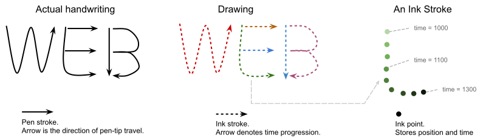

1. Introduction
-
This section is non-normative. *
Handwriting inputs are drawings. A drawing captures the information required to recreate human’s pen-tip movements digitally.
The API proposed here aims to expose operating system capabilities to the Web. We expect handwriting recognition capabilities to vary depending on the operating system, so the API aims to achieve a flexible design that can easily integrate with operating system specific features.
We expect user agents to convert Web API data structure (defined in this spec) to the ones available on the host operating system, and connect the Web API with operating system APIs.
The API doesn’t attempt to define recognition that behaves the same on all platforms.
2. Definitions
In this spec, we define the following concepts, using the handwritten “WEB” for example:
-
A drawing consists of multiple strokes (e.g. the above letter E consists of three strokes).
-
A stroke represents one continuous pen-tip movement that happens in a time period (e.g. from one
touchstartto its correspondingtouchendevent). The movement trajectory is represented by a series of points. -
A point is an observation of the pen-tip in space and time. It records the timestamp and position of the pen-tip on the writing surface (e.g. a
touchmoveevent). -
A transcription is a string of Unicode characters that represents the text written in a drawing (e.g. string "WEB").
A handwriting recognizer is an interface (usually implemented by an external application or a service) that:
-
Takes a drawing as input
-
Output several transcriptions of the drawing
-
Optionally, output segmentation information about each transcription
What constitutes a handwriting recognizer is at the discretion of the user agent.
To convert data into and from a suitable format for handwriting recognizer, the user agent should match what’s defined in this spec to equivalent concepts used in handwriting recognizer.
A handwriting recognizer may output extra information to help web applications better process the handwriting (e.g. delete a character from the handwriting).
Segmentation maps graphemes (user-perceived character) to their composing strokes and points. A grapheme can span multiple Unicode code points.
\u0078 g̈ is composed of two UTF-16 code points:
\u0067\u0308.षि is composed of two UTF-16 code points:
\u0937\u093f. Take the handwritten text "int" for example:
-
Stroke 1 and 5 makes up letter "i"
-
Stroke 2 makes up letter "n"
-
Stroke 3 and 4 makes up letter "t"
3. API Idioms
The task source mentioned in this specification is the handwriting recognition task source.
When an algorithm queues a Handwriting Recognition API task T, the user agent MUST queue a global task T on the handwriting recognition task source using the global object of the current realm record.
Unless specified, the realm for JavaScript objects constructed by algorithm steps is the current realm record.
4. Feature Query
Feature query interface provides allows web applications to query implementation-specific capabilities, so they can decide whether to use its feature.
const modelConstraint= { languages: [ 'zh-CN' , 'en' ] }; const modelDesc= await navigator. queryHandwritingRecognizer( modelConstraint); // \`modelDesc\` describes the handwriting recognizer meeting the \`modelConstraint\`. // If the constraints can't be satisfied, \`modelDesc\` will be null. { textAlternatives: true , textSegmentation: true , hints: { alternatives: true , textContext: true , inputTypes: [ 'mouse' , 'touch' , 'stylus' ] } }
[SecureContext ]partial interface Navigator {Promise <HandwritingRecognizerQueryResult ?>(queryHandwritingRecognizer HandwritingModelConstraint ); };constraint dictionary {HandwritingModelConstraint required sequence <DOMString >; };languages dictionary {HandwritingRecognizerQueryResult boolean ;textAlternatives boolean ;textSegmentation HandwritingHintsQueryResult ; };hints dictionary {HandwritingHintsQueryResult sequence <HandwritingRecognitionType >;recognitionType sequence <HandwritingInputType >;inputType boolean ;textContext boolean ; };alternatives enum {HandwritingRecognitionType ,"text" };"per-character" enum {HandwritingInputType ,"mouse" ,"stylus" };"touch"
4.1. queryHandwritingRecognizer(constraint)
This method offers web applications a way to query the underlying recognizer’s capability and decide whether they want to use the recognizer:
-
If the constraint can be satisfied, resolves to a description of the handwriting recognizer,
-
if the constraint can’t be satisfied, resolves to
null
The same HandwritingModelConstraint can be used to invoke createHandwritingRecognizer(constraint) to create a HandwritingRecognizer that satisfies the constraint.
queryHandwritingRecognizer(constraint) method is invoked, do the following:
-
If constraint doesn’t have a
languagesmember, throw a newTypeError -
Let p be a new promise.
-
Run the following step in parallel
-
If constraint’s
languagesmember is an empty array, resolve p withnulland abort. -
Convert constraint into a suitable form for handwriting recognizer.
-
If the user agent can’t find or create a handwriting recognizer that satisfies the converted constraint, resolve p with
nulland abort. -
Let result be a new
HandwritingRecognizerQueryResult -
Convert the handwriting recognizer’s feature description, and fills in all members of result,.
-
Resolve p with result.
-
The implementation should follow these rules when converting to HandwritingRecognizerQueryResult and HandwritingHintsQueryResult:
-
If the recognizer doesn’t accept any hint, set
hintstonull. -
If a feature or hint isn’t supported, set its attribute to
null. -
If a enum hint is supported, set its attribute to the list of acceptable values.
-
If a non-enum hint is supported, set its attribute to
true.
4.2. HandwritingModelConstraint attributes
This describes the constraint that must be satisfied by the underlying handwriting recognizer (if it will be created).
This is also used to create a handwriting recognizer in createHandwritingRecognizer(constraint).
languages- A list of [BCP47] language tags that describes the languages that the recognizer has to recognize.
If more than one language is provided, the recognizer has to recognize all of them to satisfy the constraint.
User agents should consider all possible scripts of a given language tag. For example, a handwriting recognizer that only recognizes Azerbaijani in Latin alphabet ("az-Latn") shouldn’t be used for "az" language tag, because Azerbaijani can also be written in Cyrillic alphabet ("az-Cyrl").
Consider using the most specific language tag when the distinction between scripts matters. For example, use "az-Latn" if the application only needs to work with Azerbaijani in latin scripts.
Some recognizers only work with a single language. Consider creating one recognizer for each language for better interoperability.
4.3. HandwritingRecognizerQueryResult attributes
This describes intrinsic features of a handwriting recognizer implementation.
textAlternatives- A boolean indicating whether the implementation returns multiple candidates transcriptions instead of a single one.
textSegmentation- A boolean indicating whether the implementation returns segmentation information for each transcription.
hints- A
HandwritingHintsQueryResultobject that describes acceptable hints instartDrawing().
4.3.1. HandwritingHintsQueryResult attributes
This describes a set of hints that can be optionally provided to startDrawing() to improve accuracy or performance.
Conventionally, the attribute names here matches the ones accepted in startDrawing() method.
recognitionType- A list of
HandwritingRecognitionTypeenums describing the type of text that is likely to be drawn. "text"- Free form text in typical writing prose. It means the drawing represents real words. For example, a sentence in everyday speech.
"per-character"- The handwriting is made up of individual, unrelated graphemes (user-perceived characters). For example, serial numbers, license keys.
inputType- A list of
HandwritingInputTypeenums describing how the drawing is made. "touch"- Drawn with finger movements.
"stylus"- Drawn with a stylus.
"mouse"- Drawn with a mouse cursor.
textContext- A boolean indicating if textContext is accepted.
textContextis a string that contains the text shown to user, or previously recognized text that comes before the current drawing. alternatives- A boolean indicating if the number of alternative transcriptions can be set. This limits the maximum number of alternatives returned in
getPrediction.
Hints don’t guarantee the result transcriptions meet the description.
5. Create a handwriting recognizer
A HandwritingRecognizer manages the resources necessary for performing recognitions.
const modelConstraint= { languages: [ 'en' ] }; try { const recognizer= await navigator. createHandwritingRecognizer( modelConstraint); // Use \`recognizer\` to perform recognitions. } catch ( err) { // The provided model constraint can't be satisfied. }
[SecureContext ]partial interface Navigator {Promise <HandwritingRecognizer >(createHandwritingRecognizer HandwritingModelConstraint ); };constraint
5.1. createHandwritingRecognizer(constraint) method
This method creates a HandwritingRecognizer object that satisfies the provided HandwritingModelConstraint, and reserves the necessary resources to perform recognitions. It represents an entry point to handwriting recognizer.
-
If the constraint can be satisfied, and there’s sufficient resource on the operating system to perform recognition, resolves to a
HandwritingRecognizerobject. -
Otherwise, rejects with an error.
The user agent might ask the user to install handwriting models and download handwriting models. Web applications shouldn’t assume this method always resolves quickly.
createHandwritingRecognizer(constraint) method is invoked, do the following:
-
If constraint doesn’t have a
languagesmember, throw a newTypeError -
Let p be a new promise.
-
Run the following step in parallel
-
If constraint’s
languagesis an empty array, reject p with a newDOMExceptionwhosenameattribute is"NotSupportedError"and abort. -
Convert constraint into a suitable form for handwriting recognizer.
-
If the user agent can’t find a handwriting recognizer that satisfies the converted constraint, reject p with a new
DOMExceptionwhosenameattribute is"NotSupportedError"and abort. -
If creating a handwriting recognizer would cause the user agent to exceed its limit for total number of active recognizer, reject p with a new
DOMExceptionwhosenameattribute is"QuotaExceededError". -
If the user agent can’t prepare handwriting recognizer to perform recognitions, reject p with a new
DOMExceptionobject whose name depending on the failure cause and abort:-
If the web application shouldn’t retry,
"OperationError". -
Otherwise
"UnknownError".
-
-
Let result be a new
HandwritingRecognizerobject, whose active flag istrue -
Resolve p with result.
-
6. Use a recognizer
const drawingHints= { textContext: "Hello world." } const drawing= recognizer. startDrawing( textContext) // Do something with \`drawing\`. // Frees resources associated with recognizer. recognizer. finish()
6.1. HandwritingRecognizer object
[Exposed =Window ,SecureContext ]interface {HandwritingRecognizer HandwritingDrawing (startDrawing optional HandwritingHints = {});hints undefined (); };finish dictionary {HandwritingHints DOMString = "text";recognitionType DOMString = "mouse";inputType DOMString ;textContext unsigned long = 3; };alternatives
HandwritingRecognizer has an active flag, which is a boolean. active flag is initially true, and becomes false when finish() method is called.
When the recognizer’s active flag is true, web applications can create new drawings associated with this recognizer, and perform recognitions.
User agents may limit the total number of active handwriting recognizers for a website.
6.2. startDrawing(hints)
This method creates a HandwritingDrawing which stores the drawing information for subsequent recognitions.
HandwritingDrawing has a strokes, which is a list of HandwritingStrokes, and initially empty.
HandwritingDrawing has a recognizer, which stores a reference to the HandwritingRecognizer creating this HandwritingDrawing.
startDrawing(hints) is invoked, do the following:
-
If
this.active flag isn’ttrue, throw a newDOMExceptionobject, whosenamemember is"InvalidStateError"and abort. -
Convert the provided hints to format suitable for handwriting recognizer.
-
Create a new
HandwritingDrawingas result, store the converted hint in it if necessary. -
Set result.recognizer to
this. -
Return result.
If the provided hints contains features unsupported by handwriting recognizer, the user agent should ignore relevant attributes.
If the hints isn’t provided, the user agent might apply default at their own discretion.
user agents might create and pass the converted hints to an equivalent handwriting recognizer drawing object without storing it in HandwritingDrawing.
6.3. finish()
This method sets this’s active flag to false, frees the allocated handwriting recognizer resources, and cause future operations involving this’s handwriting recognizer to fail.
The user agent should free resources associated with handwriting recognizer.
After calling finish(), subsequent getPrediction() calls on HandwritingDrawing created by this will fail.
7. Build a HandwritingDrawing
HandwritingDrawing manages contextual information about a drawing, and maintains the strokes and points making up of the drawing. It represents a drawing.
User agent can store all strokes and points in memory, the convert them to a format suitable for handwriting recognizer when getPrediction() is called. In this case, HandwritingDrawing and HandwritingStroke acts like a list.
HandwritingStroke and HandwritingDrawing method is called. In this case, HandwritingDrawing and HandwritingStroke acts as a wrapper for platform-dependent objects of handwriting recognizer.
user agent can track drawing changes to improve getPrediction() performance. Such change tracking can be achieved by marking strokes as "modified" when relevant methods are called. Change tracking enables user agent to perform incremental recognitions with a supported handwriting recognizer.
For example, consider a drawing consists of three paragraphs of text, whose predictions from previous getPrediction() call is stored. The web application then adds a stroke to the third paragraph. With change tracking, the implementation will request handwriting recognizer to make a new prediction about the strokes of the third paragraph (e.g. including strokes near the changed stroke), and merge this prediction with existing ones.
const handwritingStroke= new HandwritingStroke() // Add points to a stroke. handwritingStroke. addPoint({ x: 1 , y: 2 , t: 0 }); handwritingStroke. addPoint({ x: 7 , y: 6 , t: 33 }); // Retrieve points of this stroke. // Returns a copy of all the points, modifying the returned points // has no effect. const points= handwritingStroke. getPoints(); [ { x: 1 : , t: 2 , t: 0 }, { x: 7 , y: 6 , t: 33 } ]; // Delete all points in a stroke. handwritingStroke. clear(); // Add a stroke to the drawing. drawing. addStroke( handwritingStroke); // Get all strokes of the drawing. // Returns a list of \`HandwritingStroke\` in the drawing. Web applications can // modify the stroke. For example, calling HandwritingStroke.addPoint(). drawing. getStrokes(); [ HandwritingStroke, /* ... */ ] // Delete a stroke from the drawing. drawing. removeStroke( handwritingStroke); // Delete all strokes from the drawing. drawing. clear();
[Exposed =Window ,SecureContext ]interface {HandwritingDrawing undefined (addStroke HandwritingStroke );stroke undefined (removeStroke HandwritingStroke );stroke undefined ();clear sequence <HandwritingStroke >();getStrokes Promise <sequence <HandwritingPrediction >>(); }; [getPrediction SecureContext ,Exposed =Window ]interface {HandwritingStroke ();constructor undefined (addPoint HandwritingPoint );point sequence <HandwritingPoint >();getPoints undefined (); };clear dictionary {HandwritingPoint required double ;x required double ; // Optional. Number of milliseconds since a reference time point for a // drawing.y DOMHighResTimeStamp ; };t
t in HandwritingPoint, measure all of t values from a common starting point for a given HandwritingDrawing.
For example, define t === 0 to the time point when startDrawing() is called. Or use Date.now() when the point is collected (e.g. when a touchmove event occurred).
7.1. HandwritingStroke
HandwritingStroke represents a stroke. It stores the information necessary to recreate one such movement.
HandwritingStroke has a Points which is a list that stores the points of this stroke. points is initially empty.
7.1.1. HandwritingStroke()
-
Create a new
HandwritingStrokeobject, let it be result. -
Return result.
7.1.2. addPoint(point)
this, when invoked, do the following:
-
If point doesn’t has a
xmember, throw a newTypeErrorand abort. -
If point doesn’t has a
ymember, throw a newTypeErrorand abort. -
If point has a
tmember, andtisn’t a number, throw a newTypeErrorand abort. -
Let p be a new object,
-
Set p.
xto point.x -
Set p.
yto point.y -
If point has a
tmember, set p.tto point.t
If point doesn’t have t member, The implementation shouldn’t interpolate or use a default numerical value. The implementation should reflect point.t isn’t set in p.t.
Modifying point after calling addPoint(point) has no effect on the HandwritingStroke.
7.1.3. getPoints()
This method returns points in this stroke.
A deep copy prevents modifications to the internal points, and enables change tracking.
Modifying the return value of getPoints() has no effect on the stroke.
7.1.4. clear()
This method removes all points of this stroke, effectively making this stroke an empty one.
7.2. HandwritingDrawing
7.2.1. addStroke(stroke)
-
If stroke isn’t an instance of
HandwritingStroke, throw a newTypeErrorand abort.
7.2.2. removeStroke(stroke)
-
If stroke isn’t an instance of
HandwritingStroke, throw a newTypeErrorand abort. -
Remove items
this.strokes if the item is the same object as stroke
7.2.3. getStrokes()
This method returns a list of strokes in this drawing.
7.2.4. clear()
8. Get predictions of a HandwritingDrawing
// Get predictions for the strokes in this drawing. const predictions= await drawing. getPrediction(); // \`predictions\` is a list of \`HandwritingPrediction\`s, whose attributes // depends on handwriting recognizer's capability, and align with model // descriptor returned in queryHandwritingRecognizer(). // // For example, a \`recognizer\` supports textSegmentation. [ { text: "hello" , segmentationResult: [ { grapheme: "h" , beginIndex: "0" , endIndex: "1" , drawingSegments: [ { strokeIndex: 1 , beginPointIndex: 0 , endPointIndex: 32 }, { strokeIndex: 2 , beginPointIndex: 0 , endPointIndex:: 40 }, ] }, { grapheme: "2" , beginIndex: "1" , endIndex: "2" , drawingSegments: [ { strokeIndex: 2 , beginPointIndex: 41 , endPointIndex:: 130 }, ] }, // ... ] }, { text: "he11o" , segmentationResult: [ /* ... */ ] }, // Up to a total of \`alternatives\` predictions, if provided in startDrawing(). ];
8.1. getPrediction()
getPrediction() methods returns a list of predictions of this drawing, and their metadata.
The predictions are ordered in decreasing confidence. If non-empty, the first prediction should be the most likely result.
If the handwriting recognizer wasn’t able to recognize anything, getPrediction() should resolve with an empty list.
The user agent might perform change tracking and perform incremental recognition to improve performance.
getPrediction() is invoked:
-
If
this.recognizer.active isn’t true, return a a promise rejected with"InvalidStateError"DOMException. -
If
this.strokes is empty, return a a promise resolved with a new empty list. -
Convert
thisdrawing into a format suitable for handwriting recognizer. -
Let p be a new Promise, run the following step in parallel
-
Send the converted drawing to handwriting recognizer.
-
Wait for handwriting recognizer to return its predictions.
-
Queue a Handwriting Recognition API task to perform the following steps:
-
Let result be a list.
-
For each returned prediction pred:
-
Convert pred into
HandwritingPredictionidl_pred. -
Append idl_pred to result.
-
-
Resolve p with result.
-
-
-
Return p
8.2. HandwritingPrediction attributes
HandwritingPrediction represents a prediction result from handwriting recognizer.
dictionary {HandwritingPrediction required DOMString ;text sequence <HandwritingSegment >; };segmentationResult dictionary {HandwritingSegment required DOMString ;grapheme required unsigned long ;beginIndex required unsigned long ;endIndex required sequence <HandwritingDrawingSegment >; };drawingSegments dictionary {HandwritingDrawingSegment required unsigned long ;strokeIndex required unsigned long ;beginPointIndex required unsigned long ; };endPointIndex
text- A
DOMStringthat represents the transcription of the drawing. segmentationResult-
A list of
HandwritingSegmentthat maps each recognized grapheme (a user-perceived character) to its composing strokes and points.If the handwriting recognizer doesn’t support text segmentation,
null.Web applications can use
textSegmentationto check if this attribute will be null.
8.2.1. HandwritingSegment attributes
HandwritingSegment describes about a single grapheme that’s segmented from the drawing.
grapheme- A
DOMStringthat represents grapheme. beginIndex- The index where this grapheme begins in
text. endIndex- The index where this grapheme ends (where the next grapheme begins) in
text. drawingSegments- A list of
HandwritingDrawingSegmentthat describes the portion of the drawing that makes up of this grapheme.
Slicing text with beginIndex and endIndex should result in grapheme.
// Web applications can slice \`text\` using \`beginIndex\` and \`endIndex\`. // For example, a \`HandwritingPrediction\` for "घोषित" is: const prediction= { // UTF-16 code points: \u0918 \u094b \u0937 \u093f \u0924 // Graphemes: घो, षि, त text: "घोषित" , segmentationResult: [ { grapheme: "घो" , beginIndex: "0" , endIndex: "2" }, { grapheme: "षि" , beginIndex: "2" , endIndex: "4" }, { grapheme: "त" , beginIndex: "4" , endIndex: "5" }, ] } // The followings are true: prediction. text. slice( 0 , 1 ) === "घो" ; prediction. text. slice( 2 , 4 ) === "षि" ; prediction. text. slice( 4 , 5 ) === "त" ; // Web applications can delete the 2nd grapheme (षि) by splicing. const withoutSecondGrapheme= ( [... prediction. text] . splice( prediction. segmentationResult[ 1 ]. beginIndex, prediction. segmentationResult[ 1 ]. endIndex) . join( '' ) ); // => "घोत"
8.2.2. HandwritingDrawingSegment attributes
HandwritingDrawingSegment describes a continuous segment of a HandwritingStroke.
The attributes are based on the HandwritingStroke in the HandwritingDrawing when getPrediction() is called.
strokeIndex- The index of the
HandwritingStrokeinHandwritingDrawing.strokes. beginIndex- The index where the drawing segment begins.
endIndex- The index where the drawing segment ends (where the next drawing segment begins).
9. Privacy Considerations
This section is non-normative.The fingerprint vector comes from two parts: feature detection and recognizer implementation.
The amount of information (entropy) exposed depends on user agent’s implementation. We believe there isn’t a one-size-fits-all solution, and recommend the user agents decide whether privacy protections (e.g. permission prompts) are necessary for their users.
Feature detection could expose information about:
-
User’s language choices (or installed handwriting recognition models). This is also available in
navigator.languages. -
The recognizer implementation being used, by summarizing the set of supported features. This might lead to some conclusions about the operating system and its version.
Fingerprinting can be mitigated with:
-
Privacy budget: the user agent rejects promises, if the website issues excessive queries.
-
Permission prompts: the user agent asks user to grant unrestricted handwriting recognition features.
-
Hardcoded values: the user agent returns hard-coded values for query operations, if it’s possible to determine languages and features at build time.
Recognizer implementation might expose information about the operating system, the device, or the user’s habit. This largely depends on the recognizer technology being used.
Below are some types of recognizer implementations, and their associated risks:
-
No recognizer support: No fingerprint risk.
-
Cloud-based recognizer: Little to no risk. The website might be able to detect the cloud service being used (by comparing the prediction result against the result obtained by calling the cloud service directly). No extra information is revealed about the user or their device.
-
Stateless models (most common): Output of such models is entirely dependent on the input drawing and the model itself.
-
Models that can only updated with the browser (e.g. entirely implemented within the browser): The website can learn about the browser’s version, which can otherwise be detected by other means.
-
Models that can be updated outside of browser (e.g. implemented by calling an operating system API), depending on the scenario, the website can learn:
-
OS version, if the models are updated along with every OS update.
-
OS version range, if the models are updated with some but not all OS updates.
-
A specific update patch revision, if the models are updated out-of-band or on-demand.
-
-
If the models utilizes hardware accelerators (e.g. GPU). The result might reveal information about particular hardwares.
-
-
Stateful / Online learning models (worst hypothetical case): These models can learn based on the previous usages. For example, an OS recognizer that adjusts its output based on user’s IME habits. These models can reveal large amount of information about the user, and poses a huge risk.
However, we aren’t aware of any recognizer implementations that falls within this type. But we recommend using privacy protection for these models, or use a fresh / clean state for each session.
Cost of fingerprinting: the fingerprinting solution need to craft and curate a set of handwriting drawings (adversarial samples) to exploit differences across models. The cost of generating these samples may be high, but it’s safe to assume a motivated party can obtain such samples.